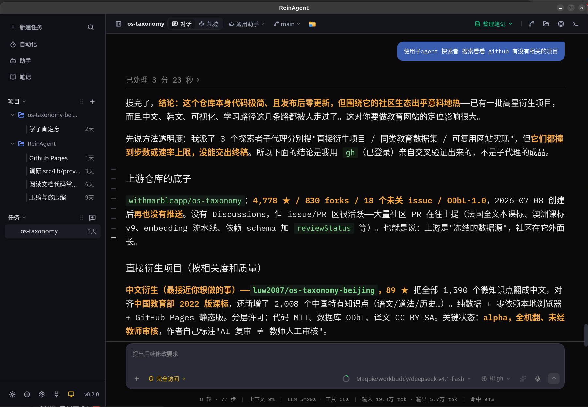

一套本地底座，问与做都在同一处
对话、任务、代码改动与模型配置共用一份本地数据；切换任务自动还原专属模型与推理等级，新建任务不产生配置污染。
本地优先与绿色单文件
所有会话历史、任务时间线、代码改动快照、模型密钥与配置 100% 留在本地（SQLite WAL + JSON）。提供免装 Node.js / Python / Rust 的独立绿色可执行文件，解压即跑。
知识库与笔记本系统
本地纯净 Markdown 物理文件夹与真实 .md 文件映射；支持所见即所得双栏编辑、AI 写作助手侧弹窗与对话一键整理笔记沉淀。
三端原生融合
Linux（WebKitGTK）、Windows（WebView2）、macOS 深度原生适配；托盘常驻、单实例守护、关闭窗口最小化继续跑。
多智能体协作
主 Agent 派发独立子代理并行作业与任务隔离；对话流中的工具卡片可一键唤起子代理面板，查看思考链与完整工具轨迹。
审批与原子回退
四档审批模式（plan / ask / edit / full）；文件修改前自动留存前像，UI 支持逐轮撤销，具备 SHA-256 指纹冲突防护。
真实多协议接入
原生适配 Chat Completions、Anthropic Messages、Responses 与 Google Generative AI；Fail-Fast 握手探测，Base URL 规范化清洗。
上下文预算与压缩
基于服务端真实元数据计算水位线，70% 触发压缩；微压缩非侵入式裁剪历史工具结果，本地反代放宽至 32MB 护栏。
知识图谱
笔记一键抽取实体与关系（5 类实体 / 5 类关系，全局去重），Canvas 力导向图可拖拽缩放、合并校正；语义检索按 1 跳关系自动扩展相邻笔记。
PR / MR 评审闭环
Git 面板内置 gh / glab：PR 状态、门禁、CI 分项与审查意见一屏可见；合并 · 关闭 · 转草稿直达，待处理反馈一键交给 Agent 修复。
用量可观测
token 总览、年热力图、逐日分模型趋势与模型份额；新增按来源（聊天/看板/定时/子代理/笔记 AI/记忆整理/图谱…）拆分与 7×24 周热力图。
SSH 远程项目
工作区直填 ssh:// 地址：Agent 文件工具 / 命令 / Git 查看全程作用在远端机器；密码与密钥双认证、链路 keepalive 自检、终端即远端 shell。
应用中心与内置浏览器
9 大主流大模型官网直达（Gemini / ChatGPT / Claude / Grok / Muse / DeepSeek / 豆包 / 千问 等），原生 Chrome 级多标签管理、前进后退、OAuth 弹窗闭环与全屏自适应交互。
自动化长效沉淀与技能中枢
定时自动化任务支持复用单会话长效追踪，彻底解决重复刷屏；43 款主流工具 768+ 技能秒级扫描导入与上游版本追更；离线 MCP Fail-Fast 真实透传。
明暗主题与语义化配色
全系统遵循 Tailwind CSS v4 语义变量换肤，内置 AntiGravity 与 OpenCode 两套消息配色体系。

两种跑法
桌面版（无需环境）
# 下载对应系统的绿色可执行文件
# https://github.com/web3claw/ReinAgent/releases/latest
#
# Linux AppImage / 可执行二进制
# Windows 便携 .exe
# macOS 原生应用
#
# 免装 Node.js / Python / Rust，解压即跑关闭窗口默认最小化到系统托盘，后台继续运行。
源码运行
git clone https://github.com/web3claw/ReinAgent
cd ReinAgent
bun install
bun run tauri dev
# 需要 Bun ≥ 1.1、Node.js ≥ 20、Rust stable正式打包使用 bun run tauri build。
按功能分页的说明文档
每一块能力都有独立页面，包含配置项、面板说明与排错。